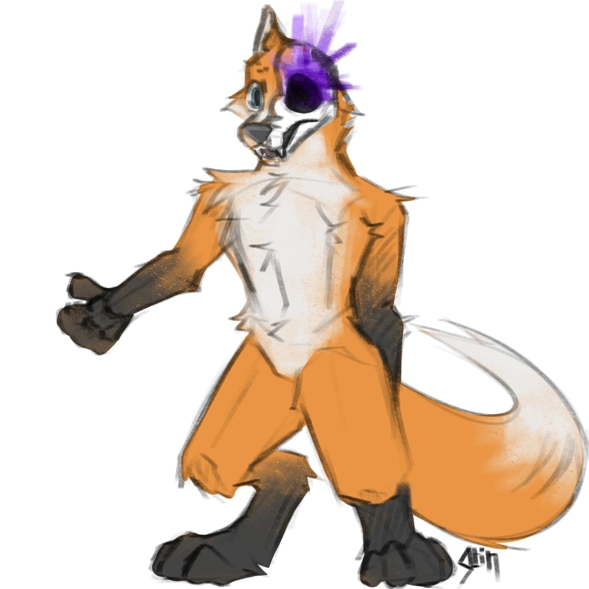
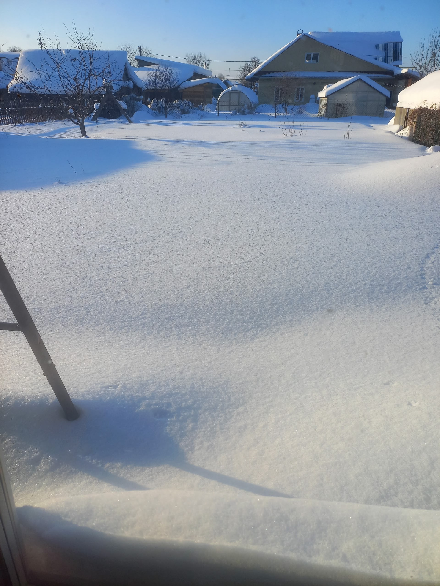
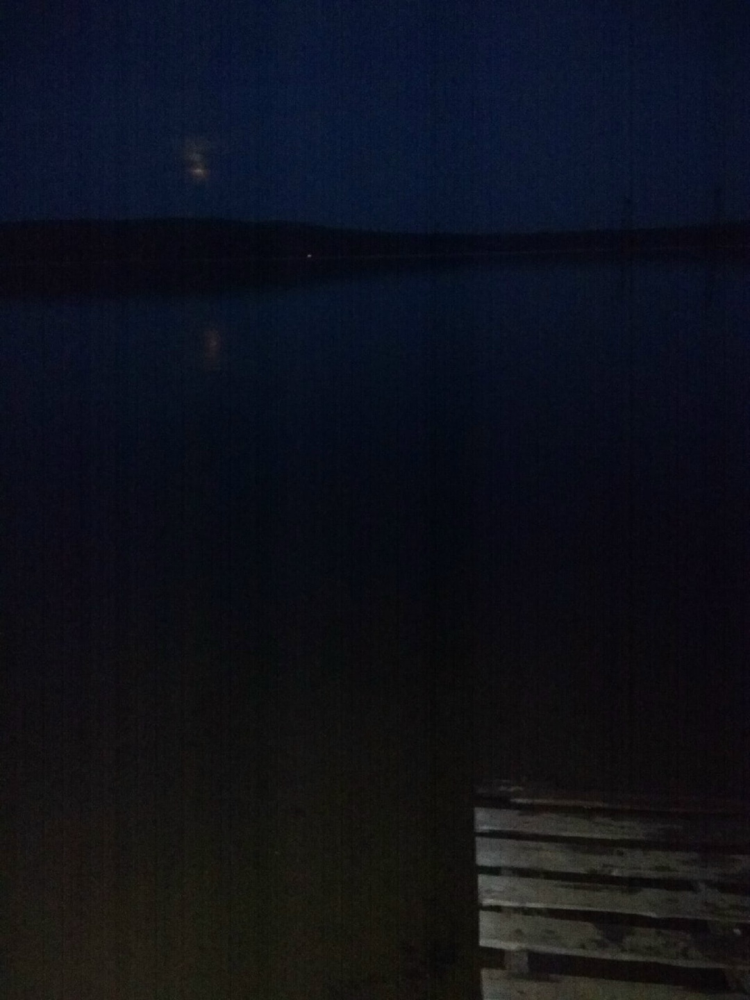
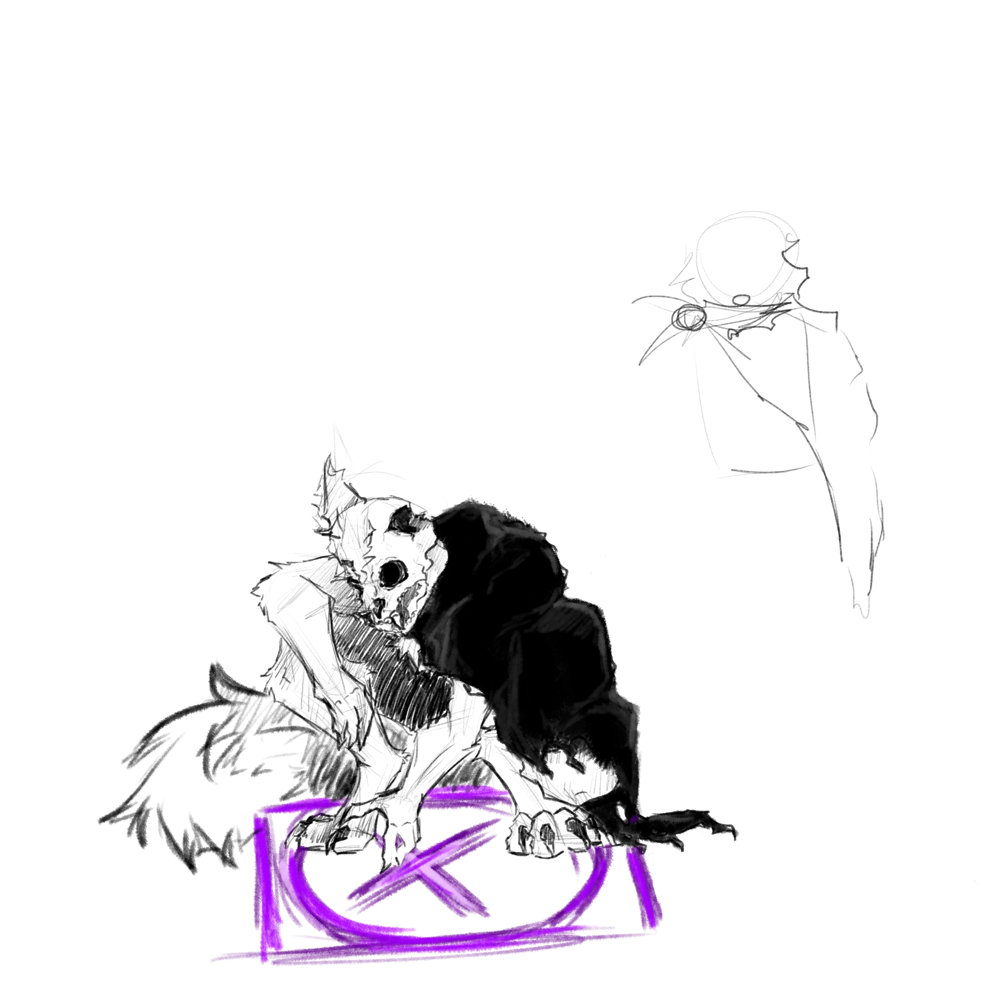

моё имя: Лекс
Я плод запрещённого эксперемента по созданию существа из абсолютной тьмы. Создан я из междумировой тьмы, души обычного обывателя и костей рандомного трупа. По скольку я не привязан не к миру мёртвых не к миру живых я спокойно могу ходить меж этих миров, чем редко я занимаюсь... Видите моё пламя в глазнице черепа? дак вот, оно не просто так, оно показывает состояние души
моё, например сейчас я спокоен. Я постоил свой культ посвящённый поиску баланса в хаосе и порядке этого мира. Так же я являюсь шизой
, хозяина меня как фуррсоны, однажды в той или иной форме я выбирусь из его головы, но это планы на патом, у меня есть ещё 59 лет, чтобы релиализовать это. Я считаю, что лишать жизни существ, не для своего проживания это не верно, по этому я убиваю лишь тогда когда без этого невозможно полноценно выжить, например для пропитания. Моя душа блуждает между людьми в разных вариациях и с каждым я заключаю онтракт до их смерти, на то что я буду им помогать и раделять одиначество, а они будут стараться воссоздать мне тело и сознание в материальный план.

Зимний пейзаж
Тут изабражено как много выпало снега в 2025 году зимой, да так что снег был по таз.

Ночной пруд
Данное фото было сделанно на верхневыйском пруду в 3 часа ночи, в это время был слышен звон тишины, дикие звери акуратно подходили к самому пруду дабы попить, даже вода в этот момент молчала, будто умалчивая какоето преступление.

Ритуал по созданию якоря безумия
Лекс вот только начертил сигил безумия, который является его окульным символом, после проведения определённого ритуала здесь должен возникнуть новый якорь безумия через который станет возможным перемещение душь.